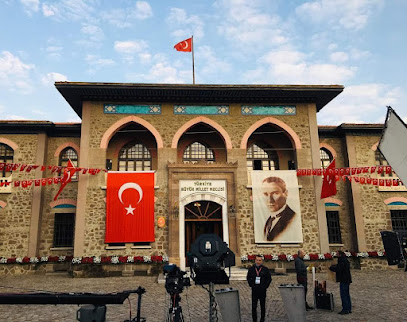

Türkiye Büyük Millet Meclisi (TBMM), Türkiye'nin temel yasama organıdır ve 1920 yılında kurulmuştur. Ankara'da yer alır.
TBMM'nin eski binası Ulus'tadır.
Eski Meclis Binası, 1924-1960 yılları arasında TBMM'nin faaliyet gösterdiği tarihi bir yapıdır. 1960 darbesi sırasında hasar görmüş ve daha sonra restore edilmiştir.
Bugün müze olarak hizmet vermektedir.
TBMM'nin tarihi binası, mimarisi ve önemi nedeniyle Ankara'nın en önemli simgelerinden biridir.

NOT: Bu harita Google Haritalar ile gösterilmiştir.